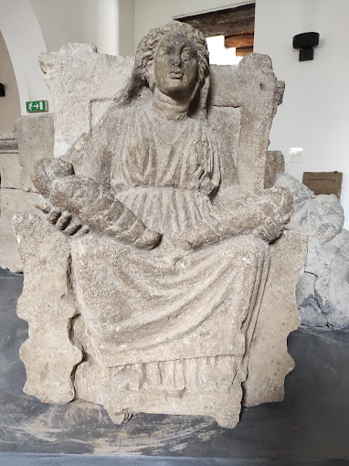

Nel panorama archeologico della Campania antica, le "Matres" rappresentano una delle testimonianze più originali e profonde della spiritualità delle popolazioni italiche. Rinvenute in gran numero nel santuario in località "Petrara" (presso l'antica Capua), queste sculture in tufo coprono un arco temporale che va dal VI al II secolo a.C., documentando la persistenza di una devozione radicata anche dopo la romanizzazione dell'area.

Le Madri di Capua
Museo Archeologico Nazionale dell’Antica Capua – Ministero della Cultura
Il fulcro del culto era Mater Matuta, una divinità di straordinaria importanza nel pantheon italico e osco. Venerata come dea dell'aurora, essa incarnava la protezione della luce nascente, simbolo per eccellenza della fertilità e della nascita. Come "protettrice delle partorienti", Mater Matuta accoglieva le preghiere delle donne che chiedevano la grazia della maternità o il buon esito del parto. Una scultura monumentale del V-IV sec. a.C. ci restituisce l'immagine della dea: seduta su un trono, con un busto robusto fasciato da una tunica aderente, tiene nella mano sinistra una melagrana (simbolo di fecondità per l'abbondanza dei suoi chicchi) e nella destra una colomba, icona di purezza e devozione.
La comprensione di questo culto è arricchita dalle testimonianze scritte. Molte iscrizioni in lingua osca rinvenute nel territorio capuano fanno riferimento a complessi rituali di sacrificio. Questi testi rivelano che la religione osca era strettamente legata ai cicli biologici: i riti non riguardavano solo la celebrazione delle nascite, ma anche il passaggio solenne verso la morte, unendo l'inizio e la fine dell'esistenza sotto l'egida della divinità. Un ruolo fondamentale era svolto dalle iuvilas, iscrizioni su stele o cippi (molte delle quali conservate al Museo Archeologico Nazionale di Napoli) che indicavano scadenze per cerimonie e festività religiose, spesso presiedute dai magistrati locali, confermando come il culto delle Matres non fosse solo un fatto privato femminile, ma un elemento centrale dell'organizzazione civile e sociale delle città osche.
Oggi, la collezione del Museo Campano di Capua costituisce un unicum a livello mondiale. Attraverso il tufo grigio e poroso, queste madri silenziose continuano a trasmettere il senso di sacralità che gli Osci attribuivano alla generazione, rendendo Mater Matuta una delle figure più emblematiche e carismatiche dell'identità storica campana.